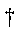

In protein work, each atom will be labeled using information supplied by the PDB
file. An alternative is to use keyword RESIDUES which causes the
PDB-style labels to be worked out using only the topology of the system.
Modified residues can still be recognized if XENO=text is used. Unless other keywords
such as
CHAINS, and START_RES are
present, or the input file is already in PDB format, the residue nearest to the NH2 end of the protein will be No. 1
in chain A, the next is 2, and so on, and the different chains will be labeled
A, then B, C, D, etc. If the input file is in PAB format, not just in
MOPAC format with PDB information, the residue numbers and chain letters will be
worked out from the PDB file.
Keyword RESIDUES uses part of
MOZYME, so when the job starts it uses the MOZYME option. If keyword MOZYME is not
present, then the job will only be allowed to run if no SCF calculations are
possible. This is to prevent a MOZYME calculation being done unless keyword MOZYME
is present. Jobs that do not involve SCF calculations use one or more
of the keywords 0SCF, LEWIS,
CHARGES, ADD-H,
SITE, or RESEQ.
Keyword RESIDUES converts the data-set into almost standard PDB format
by making the minimum change to the existing format. This means that:
* The residue numbers and letters will be preserved. * Atoms will not be
re-arranged. To put the atoms into standard PDB sequence, use
RESEQ. * If a heterogroup is covalently
bonded to an existing residue, the residue will not be correctly recognized.
To correctly recognize modified residues, use CVB to
remove the covalent bond joining the heterogroup to the residue. Then, if
necessary, use XENO=text to re-name the residue and to name
the heterogroup. * Heterogroups are labeled using a simple numbering system.
When more than one atom of an element is present, the atoms will be numbered
sequentially, i.e., C1, C2, .... C45, C46. When this convention is not
wanted, for example if heteroatoms are labeled C2', P', etc., (think
saccharides) then edit the new geometry by using cut-and-paste and the original,
better, labeling system. Do not correct errors in atom serial numbers -
these will be automatically corrected by MOPAC in future jobs. * All atoms
will be given a chain-letter. This includes water molecules, ligands, etc.
* Atom serial numbers correspond to atom numbers plus any terminators (TER's).
Although interesting, these numbers are re-calculated when any future jobs are
run. That is, atom serial numbers are not important in any MOPAC
calculations. * Many PDB files use non-standard atom labels. If the
label is highly unusual the new label might be incorrect. * Every atom should
have a unique label. This is important for jobs that use
GEO_REF.
RESIDUES0 - preserves the original atom labels
Good practice is to use RESIDUES to assign PDB labels to atoms, and to
not do any other operations, i.e., do not resequence the atoms, or do any
calculations in the same job. After the RESIDUES job finishes,
examine both the output and the new data-set(s) to check that the re-labeling
operation was done correctly. In the original PDB data-set, some atoms
might have unusual labels, for example, a sugar backbone atom might have a label
such as " C3' " To keep the original atom labels, use RESIDUES0
(the word "RESIDUES" followed by a zero) instead of RESIDUES. If the starting geometry was already in PDB
format, and the re-labeling is partially incorrect, then copy and paste the
relevant parts of the correctly re-labeled file into the original data-set.
When individual amino acids are mutated, RESIDUES can be used to
re-label the mutated sites.
If RESIDUES does not work when other keywords are present, run RESIDUES
with keyword 0SCF in a job on its own, then use the results for the job you
want.
The most common use for RESIDUES is to allow the residue sequence
reported in the PDB file to be compared to the sequence defined by the geometry,
i.e., by the topology, of the system. By comparing reported and actual
sequences, possible problems in the PDB file can be detected.
Table:
Abbreviations for the 20 Amino Acids
Amino Acid
Formula of
Residue
Three-Letter
Abbreviation
One-Letter
Abbreviation
Glycine
C2NOH3
GLY
G
Alanine
C3NOH5
ALA
A
Valine
C5NOH9
VAL
V
Leucine
C6NOH11
LEU
L
Isoleucine
C6NOH11
ILE
I
Serine
C3NO2H5
SER
S
Threonine
C4NO2H7
THR
T
Aspartic acid
C4NO3H5 (4)
ASP
D
Asparagine
C4N2O2H6
ASN
N
Lysine
C6N2OH12 (13)
LYS
K
Glutamic acid
C5NO3H7 (6)
GLU
E
Glutamine
C5N2O2H8
GLN
Q
Arginine
C6N4OH12 (13)
ARG
R
Histidine
C6N3OH7 (8)
HIS
H
Phenylalanine
C9NOH9
PHE
F
Cysteine
C3NOSH5 (4)
CYS
C
Tryptophan
C11N2OH10
TRP
W
Tyrosine
C9NO2H9 (8)
TYR
Y
Methionine
C5NOSH9
MET
M
Proline
C5NOH7
PRO
P
: The number of hydrogen atoms in the ionized residue is given in parenthesis after the formula. Cysteine may exist in the neutral, ionized or reduced form.
Small molecules are often found associated with proteins. To allow for this,
many special groups, e.g., PO4, SO4, H2O, the
aldohexoses and aldoketoses, are also recognized. Any groups not
automatically identified or wrongly identified can be explicitly labeled using XENO.